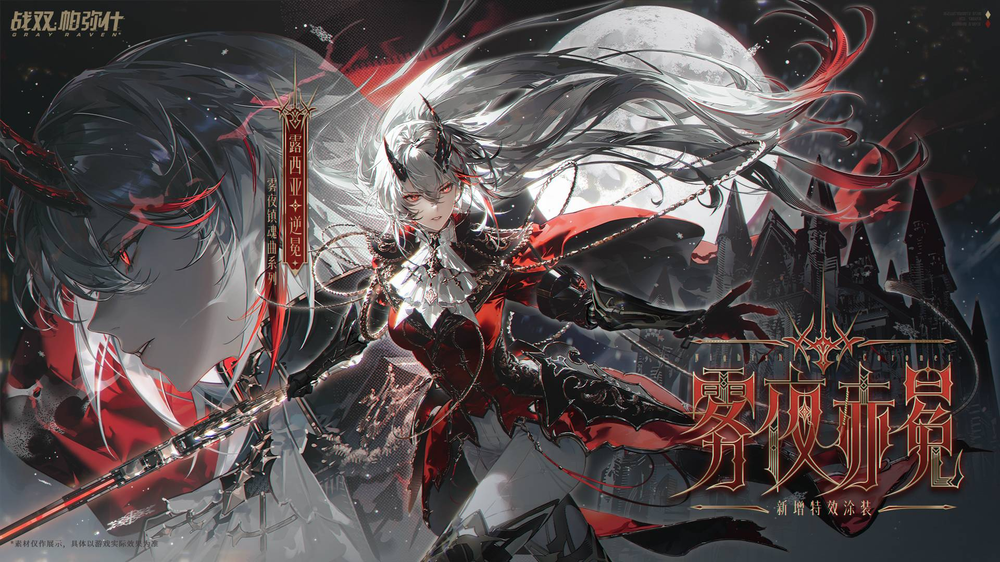
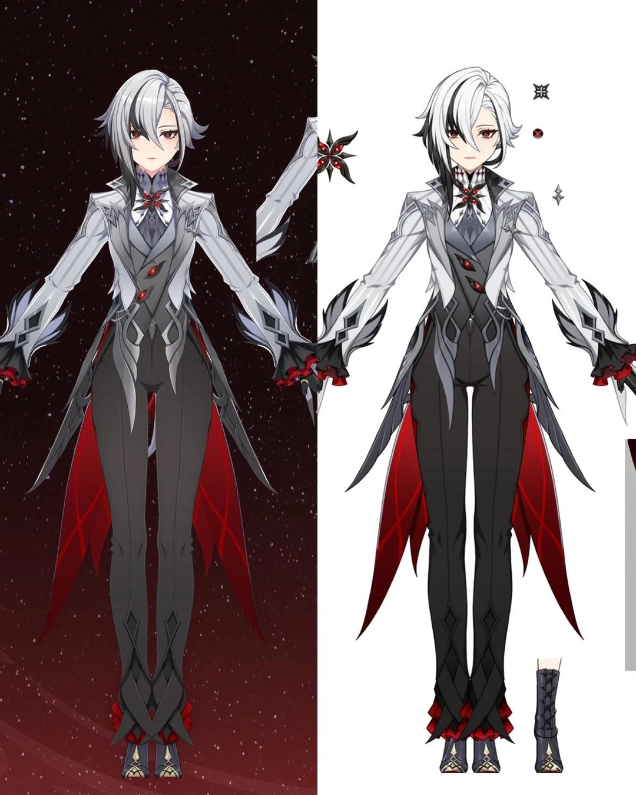

Laura's Eldest Daughter
Basic info¶
Full name:
Title:
Age:
Height:
Gender: Female
Pronounce: She/Her
Sexual orientation: asexual
Bio¶
dwahiuhiepijgoiaheh
Inspiration¶
Matter and anti-matter. They don't mix well. Far from it. It's to a point where both cannot exist at the same time and if they do, it basically results in heavy destruction whenever the two come into direct contact with each other. Now, Laura is the Zero Point Guardian. The "Omni-Being". The one to control both time and space. What if she fought someone wielding anti-matter? The perfect counter. It will be a fight both parties will not and cannot survive.
Now, that faithful day has come for Laura to deal with the being wielding anti-matter. It's a fierce battle where both suffered heavy injuries, but purely because Laura was marginally stronger, she was able to survive the encounter… for now at least. Because of this fight, Laura was left in very bad shape and became terminally ill. The anti-matter was literally destroying her from the inside.
But, to her surprise, she found a young infant left in all the rubble from her battle. The child of the anti-matter wielder. Laura could not bear the thought of leaving a child alone like that, so she did what made the most sense to her at that moment and took her in as her own. Just like her mother did for her 450+ years ago. She knew the risk but she did it anyway.
Now skip forward a few years. The infant grew to be Laura's eldest daugther. The next in line to wield the title of "Omni-Being" and the one taking over Laura's mission for when the time comes. Sadly, this time came faster than expected as Laura became very sick and was unable to do her job as a protector, but also as a mother. For years, the daugther searched for methods to cure her mother. One day, the daughter found out who she really was and discovered a shocking truth. Laura was slowly dying of anti-matter poisoning and she made it worse because she too holds the power to wield anti-matter. She was devestated. Why did her mother keep this a secret from her? If she actually knew more about herself, her parent(s), and her power, she would have been able to possibly control it and at the very least gotten to squeeze more time with her mother out of it. She gave it one more shot. One more solution to cure her mother. And somehow… it worked? A week went by and Laura was walking around like nothing happened. The daugther was reliefed and happy that her solution worked. One night as Laura and her daugther were looking at the sky, Laura suddenly collapsed. The daughter was quick to catch her and brought Laura to a safe place for some rest. Laura died later that night. The solution to her illness wasn't a proper solution at all and did in fact not work. Laura's body gave up. It knew it could not win the war anymore so it stopped trying. (Real thing that happens btw)
Laura's daughter was devestated. After all, she believed this to be her own fault. If only she knew about Laura's illness earlier. If only she knew sooner who her actual parents were. If only she knew about her powers If only she was STRONGER. If only she was... in CONTROL.
Laura's death lead to the daugthers downwards spiral. A pursuit of power and control. It starts off as some mild manner of research to better understand anti-matter and it somehow leads to some less than moral methods to reach the peak of that power and once crossing the line to reach that ultimate power, she has a mental breaking point where she gets drunk off the knowledge and power she's obtained and goes on to use it to force people to stay in line. She took Laura's mission seriously, but in her own twisted way. Laura wanted an omni-verse with no conflict, no wars, no suffering, while maintaining people's free choice and freedom. The daughter wants to achieve the same thing. But instead of freedom, she takes the extreme route and falls back on total control. If she had total control, Laura wouldn't have died. But if she had total control over everything, nobody would die under her watch ever again. No more wars, no more suffering, no more conflict. Only total control for the one wielding ultimate power.
Design Inspiration¶
{ width="277" }{ width="215" }{ width="185" }

